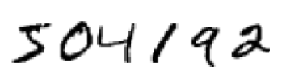
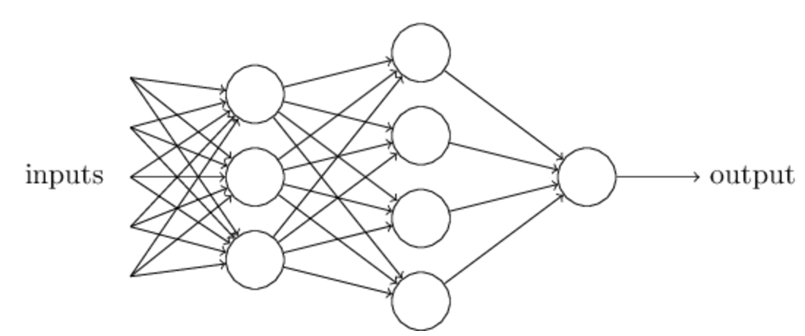
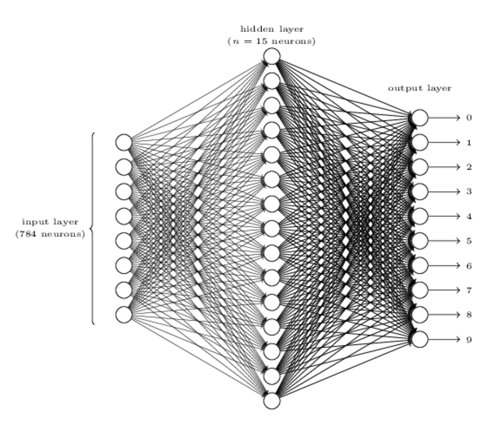

深度学习算是现在机器学习领域非常热门的方向了，虽然一直有了解并且简单用过，但是对于其中的详细原理和来龙去脉都是略知一二，于是一直想系统学习一下该领域的相关知识。《Neural Networks and Deep Learning》是一份非常好的入门材料，讲解详细而且不光是介绍了理论知识，更重要的是介绍了每一步的来龙去脉以及为什么要这样做。在线文档是英文版的，我这份总结笔记的很大部分是结合原文根据自己的理解加以提炼翻译过来的，英文水平有限，出现问题请指正。想看原版完整文档的同学可以点击上面的链接。
一. 本书内容
传统的计算机算法在解决问题的时候，通常都是由程序员制定好规则将问题进行分解，一步步进行解决。应用神经网络我们一般并不需要告诉计算机应该怎么去解决问题，而是只要给到足够的观测数据就可以了，它将会自动从这些数据中提取出解决方法。
本书主要的目的是帮助读者掌握包括深度学习相关技术在内的神经网络领域的核心知识。在掌握了本书内容后，可以使用深度学习模型解决遇到的问题，更进一步可以设计自己的神经网络用以解决特定的问题。
当然这本书也不会完全是理论知识，作者通过“手写数字识别“这个常见但是普通编程方法很难解决的问题介绍了神经网络的基本知识。通过这本书，他还基于python一步一步实现了一个简单的神经网络库，使得大家在接触到其他新的神经网络库的时候也能很快的理解并读懂代码。
二. 手写字体识别

对于这样一副图片，人脑很容易就能识别出来其中的数字。但是对于计算机就没有这么容易了，按照以前老的解决问题的思路，就是规则的堆砌，比如说“上部分有个圈，右下方有条垂直线，这个数字就是9”，很显然，对于手写字体这样肯定是不切实际的。因为手写数字太不规范了，不同人的写法不一样，很多规则并不通用，通过制定精确的规则来解决这个问题的可行性微乎其微。
神经网络则不一样，它能够从训练数据自动提炼出可以识别不同数字的“规则”，增加训练数据量的话，这样的识别结果通常就会更加准确。在这章的最后，我们会实现一个简单的神经网络程序，虽然代码量不多，但是却可以取得不错的96%的准确率。在随后的章节，我们会逐步优化我们的神经网络，使它可以取得高达99%的准确率。
手写数字识别问题很经典，不难理解，而且计算量也不大，在本书的最后，我们也会讨论一下怎么讲在这个问题上获得的思想应用到其他的领域。
这章的重点当然不仅仅是实现神经网络代码，我们将会了解到很多重要的神经网络基本概念，包括两种最重要的神经元（感知机和sigmoid），神经网络模型最基本的学习算法（随即梯度下降算法）。作者通过大段的讨论着重讲解为什么要这样做，培养大家对于神经网络的直觉，使读者可以对神经网络有更深的理解，为后续理解深度学习打下扎实基础。
三. 感知机
最简单的感知机模型如下：
其中\(x_1, x_2, x_3...\)为模型的输入，可以是0或1的非数值型变量，也可以是数值型变量，其中每个输入维度上都有对应的一个权重\(w_1, w_2, w_3\)，模型的输出是由\(\sum_jw_jx_j\)与阈值的大小关系决定的，等价于公式：
通过这个公式可以看到，感知机的作用很简单，就是对输入进行加权求和，然后和阈值对比。比阈值大，表示这个神经元受到激发了，输出1，否则输出0，这样就相当于实现了一个简单二分类器。
当然这样简单的一个神经元肯定无法满足我们的需求，通常的神经网络都是有许多个神经元组合而成的网状结构，类似下图这样的：

这里的输入是以箭头的形式表示的，通常我们是将其表示为一个特殊的神经元：
该神经元没有输入，只有一个固定的输出就等价于上面input中的一个维度。
其次这个神经网络是多层的，上一层的输出作为下一层的输入。注意到，每个神经元其实只有一个输出，但是上面图里面有些神经元却有多个输出箭头，这其实是为了直观的表示这个神经元的输出会作为后一层多个神经元的输入，也就是被使用了多次。
除此之外，我们通常的表示方法并不使用上文中阈值的表达形式，而是使用类似于回归分析中的intercept的表达形式。我们设定\(bias\)，\(b = -threshold\)，这样的话公式（1）就可以被写为
其中\(bias\)可以理解为表示该神经元被激发的难易程度，\(bias越大\)，越容易被激发。
四. Sigmoid神经元
在介绍第二种重要的神经元sigmoid之前，我们先讲一下学习算法的设计思路。假设我们现在有一个用来解决手写数字识别问题的基于感知机的神经网络，输入是手写图片展开后的特征向量，输出是识别的数字，但是其中的参数（weights和bias）是未知的。我们想做的就是通过学习获得合适的参数使得这个网络能够正确的区分手写数字。
为了理解学习算法是怎么进行的，假设我们对一些weight或者bias引入很小的变化，使得这些小变化会对神经网络的输出也产生对应的很小的变化，如下图所示：
基于这样的假设，我们可以逐步的调整参数使得神经网络可以朝着我们需要的方向进行优化，也就是说它对手写数字的识别越来越准确。例如，在学习过程中，神经网络将“9”错分为“8”，我们可以稍微调整weights和biases使得它更偏向于将这个“9”正确分为“9”。我们重复这样的步骤，直到模型对数字的识别越来越准确。
但是由于感知机的输出非0即1，任何一个感知机的参数的细微变化都有可能导致该感知机的输出在0，1上不停的跳变，这样就会导致后续的网络结构的输出可能产生非常大的变化。也就是说，可能这个“9”模型正确识别了，却会导致其他数字的识别发生非常大的改变，这样就导致我们的算法很难收敛，很难通过逐渐改变参数进行优化这样的方法去得到一个稳定的准确的模型。
通过引入sigmoid神经元就可以克服这个问题。sigmoid神经元和感知机类似，但是不同的是，修改它的参数对输出只会造成很小的影响，不会出现0到1这样截然不同的变化，因为sigmoid函数是一个连续可导的函数。
sigmoid函数：
代入输入\(x_1,x_2,...,\),权重\(w_1,w_2,...\)和偏差\(b\)，上式可以写为：
虽然从公式上看感知机和sigmoid貌似相差很多，但其实它们两者有很多相同点，为了理解这些，我们假设\(z=w*x+b\),当\(z\rightarrow+\infty\)时，有\(e^{-z}\approx 0\)和\(\sigma(z)\approx 1\),sigmoid函数达到最大值。另一方面，当\(z\rightarrow-\infty\)时，有\(e^{-z}\approx +\infty\)和\(\sigma(z)\approx 0\),sigmoid函数达到最小值，这两种特殊情况都是等价于感知机的情形的。sigmoid和感知机的不同发生在\(z=w*x+b\)值较小的情况，通过它们的函数图像可以更直观的看到这点。
感知机的激活函数是一个阶跃函数：

可以看到感知机的激活函数在0处是不可导的，而sigmoid可以看作是一个平滑版的感知机，它的函数处处可导连续。sigmoid函数的平滑性意味着参数的细微改变\(\Delta w_j\)和\(\Delta b\)会对输出产生一个细微的变化\(\Delta output\)， 利用微分的概念可以近似得到
上面的式子看起来有点复杂，但是它表明一个简单的事实，就是\(\Delta output\)和参数改变量\(\Delta w_j\)和\(\Delta b\)的线形联系。这就使得我们可以很容易的找到合适的参数变化量来实现我们需要的在输出值上的改变。
在后面的章节中，我们会看到sigmoid也只是众多激活函数中的一种，还存在其他很多合适的激活函数，但是目前来说这些都不重要。对于我们的公式（5）来说，改变激活函数只是在改变它对于变量的偏导数，并不影响我们对于流程的理解。我们先讲解sigmoid函数只是指数函数在求导时的简洁属性，而且sigmoid也是使用最广泛的激活函数。
不像感知机的输出0和1，能够很直接的表示一个数字是与否，sigmoid函数的输出是[0,1]区间上的连续实数，但是注意到\(\sigma(z)\)关于\(z\)在\((0,0.5)\)处是一个非常完美的中心对称形式，我们很容易想到用0.5作为判断sigmoid函数输出的阈值，例如当其输出不小于0.5时表示“9”，小于0.5时表示它不是“9”。熟悉逻辑回归的话，也能想到[0，1]的值域还可以当作是一个概率空间。
练习
问题一：
对于一个感知机网络，假设我们把它所有的\(w_j\)和\(b\)同时乘上一个正数\(c>0\)，证明这个感知机网络并没有改变。
答案：
感知机的激活函数为比较\(\sum_jw_jx_j+b\)和0的大小（大于0输出1，小于0输出0），乘以一个正数\(c\)以后，\(\sum_jcw_jx_j+cb = c(\sum_jw_jx_j+b)\)，并不影响它跟0的相对大小关系，当然也不会影响感知机的输出。
问题二：
对于一个感知机网络，对于给定的输入\(x\)，假设对于其中每个感知机神经元都有\(w*x+b\neq 0\).假如我们把所有的感知机神经元替换成sigmoid神经元，然后将所有\(w_j\)和\(b\)乘一个正数\(c>0\)。证明当\(c\rightarrow+\infty\)时，这些sigmoid模型等价于感知机模型，如果存在一个神经元对当前输入有\(w*x+b=0\)呢？
答案：
首先我们知道根据公式(2),感知机的输出为0和1，对于任意sigmoid函数，有\(\frac{1}{1+exp(-c*wx-c*b)}=\frac{1}{1+exp(c*(-wx-b))}\)，然后如果\(wx+b>0\)，由于\(c\rightarrow +\infty\),则有\(\sigma \rightarrow \frac{1}{1+0}=1\)，如果\(wx+b<0\)，则有\(\sigma \rightarrow \frac{1}{1+\infty}=0\),和感知机模型的行为一样！显然如果\(wx+b=0\)，则没有这样的结论，因为\(\sigma = \frac{1}{1+1} = 0.5\)和感知机情形不符合。
五. 神经网络的结构
下一节中，我们将会引入一个处理手写数字识别的神经网络，但在这之前，我们先解释神经网络中常用的一些概念。对于这样一个神经网络：
其中最左边的一层被称为输入层，最右边的一层称为输出层，其中中间的一层是隐藏层，这里只有一层隐藏层，但是隐藏层是可以有很多层的。
输入层和输出层的结构通常可以根据具体问题直接得到。比如说我们要判断一副手写数字图片表示的是“9”还是不是。最简单的方法，就是把图片的像素展开为一维向量，也就是对于64*64=4096的图片，输入层就是4096个神经元，输出层只有一个神经元，因为只要判断是否是“9”。
但是对于隐藏层就没有这么简单了，通常很难总结出设计隐藏层的通用方法。于是神经网络研究者就通过启发式的方法开发了许多隐藏层的设计。比如，一些启发式的想法就是通过考虑神经网络的训练时间来权衡隐藏层的数量。我们将在本书的后面见到其他的一些启发式的设计。
到目前为止，我们讨论的神经网络都是上一层的输出作为后一层的输入。这种神经网络也被称为前馈（feedback）神经网络，意味着在这种网络中不存在循环结构。输出不能通过反馈影响到输入。
然而也有存在含有反馈的循环神经网络（recurrent neural networks RNN）。这种模型的设计是考虑到一个神经元受到激发后，激发状态并不会随着输入的改变而立刻变化，而是会存在一段时间，通过反馈影响到输入。（RNN的详细情况，我目前也不是很清楚，以后再专门介绍一下。）
RNN相对于前馈神经网络来说应用没有那么广泛，对于RNN的学习算法不够成熟。但是RNN还是非常有意义的，因为相对于前馈神经网络来说，它更符合我们人脑的行为。不过，本书还是更关注前馈神经网络多一点。
六. 一个用于手写数字识别的简单神经网络
在定义了神经网络后，我们回到手写数字识别这个问题上。实际中，这个问题其实包含两个字问题，(1)对一串数字进行分割成一个一个的数字，也就是说确定一串数字中，数字与数字之间的边界。(2)对每个分割出的数字进行判断，识别出它表示哪个数字。
第一个问题不是我们的重点，我们主要关注第二个问题，而且我们的训练数据MNIST也是分割好的数字，一张图片就是一个数字。 为了解决这样一个识别问题，我们使用一个三层的神经网络：

由于MNIST数据都是28*28=784的图片，所以这里我们使用的神经网络的输入层也有784个神经元组成（图中只画出了部分），每个维度输入值的都是该像素点的灰度值，0表示白，1表示黑，0到1之间的小数表示不能灰度的灰色。
第二层为网络的隐藏层，我们定义它包含\(n\)个神经元，我们将会测试不同的\(n\)找出最佳的结构。图中的例子显示的是一个比较小的隐藏层结构，只有\(n=15\)个神经元。
输出层由10个神经元组成，显然对应的是0-9的10个数字。假如第一个神经元被激发，输出1，表示这个数字是0，第二个神经元被激发则表示是1，以此类推。具体的说，它们的输出是[0，1]上的实数，可能会出现多个神经元被激发的情况，我们取输出最大的那个神经元代表的数字作为输出结果。
可能有人会有疑问，是不是只需要四个神经元就够了，因为类似于二进制编码，\(2^4=16>10\)，四个神经元就足够可以表示10种不同的情形了。为什么我们要用10个呢？这样是不是显得效率不够高？其实最终作出使用10个神经元的决定也是经验性的，我们可以尝试不同的结构，最后发现，对于这个问题，10个神经元作为输出层的模型要好于4个神经元作为输出层的模型。
但是为什么会出现这样的情况呢？是否存在直觉能提前告诉我们，我们应该使用10个而不是4个吗？
为了理解为什么这样做，我们思考一下这里神经网络是怎么运行的。先考虑使用10个神经元的输出。对于第一个输出神经元，也就是决定数字是否为0的那个输出神经元，它所做的是对隐藏层的输出结果进行加权求和。那么隐藏层呢，设想隐藏层第一个神经元是为了检测图片中是否含有这样的模式：
这个神经元可以通过对这些区域的像素点给予大的权重，而对其他区域的像素点给予小的权重实现这样的功能。同样的，设想隐藏层中的第二个，第三个，第四个神经元分别可以检测下面这些图片特征：
可以看到，这个例子，也就是这四个特征刚好组成了0这个数字：
所以如果这几个隐藏层的神经元都被激发的话，我们就可以判断这个数字是0了。当然，我们判断是0的特征并不是只有这些，实际中0的写法也是多种多样的。
这样的话似乎解释了为什么使用10个输出神经元比4个输出神经元效果好。因为假如用4个输出的话，就不大好将数字的特征和最终的输出联系起来。
不过这其实也是一种启发式的想法。并没有什么证据证明这个三层的神经网络必须按照这种方式进行数字的识别：一个隐藏神经元识别图像的一部分特征形状。也许会存在更好的学习算法使得4个神经元输出的神经网络一样可以达到很好的效果。
练习
如下图所示，通过在原有三层神经网络的基础上再加上一个新的由四个神经元组成的输出层，就可以实现数字的二进制表达形式的输出，假设这个三层神经网络识别准确度非常高，也就是正确数字所在的神经元的激活值不小于0.99，其他神经与激活值小于0.01，试找出最后一层的weights和bias
答案：
这个题目答案并不唯一，考虑到可以这样：
\(0\rightarrow 0001, 1\rightarrow 0010, 2\rightarrow 0011...\)，然后发现最后一层第一个神经元为1的时候对应的数字有7，8，9，第二神经元位1的时候对应的数字有3，4，5，以此类推。然后按照这些规律把对应有联系的地方的权重设置为1，没联系的可以设置为0，再稍微调节bias就可以了，这里就不具体算了。
七. 梯度下降学习算法
在设计好了我们的神经网络之后，它怎样才能识别数字呢？首先需要通过训练集进行学习。这里我们使用MNIST数据集。MNIST大家应该都了解过，都是28*28=784像素的图片。
这里我们定义训练输入为\(x\)，长度为784的一维向量。定义\(y=y(x)\)为输入为\(x\)下正确的输出，是一个10维的向量。例如：对于数字为6的一副图片，\(y(x) = (0,0,0,0,0,0,1,0,0,0)^T\).
我们想要的是算法可以帮我们找到合适的weights和biases使得我们神经网络的输出可以尽可能的接近它的真实值。定义一个损失函数：
这里\(w\)表示所有权重，\(b\)表示所有偏差，\(n\)是训练数据集的大小，\(a\)是输入为\(x\)时我们的神经网络的输出。我们的目的就是找到合适的参数使损失函数的值尽量小。我们选择这个二次损失函数，而不是考虑正确分类的数量主要是因为这个函数是平滑的，连续可导。我们随后也会做一些调整，使用其他的平滑函数。
为了解决这个最小化的问题，接下来先介绍梯度下降算法。
假设我们想要最下华函数\(C(v)\)，函数的参数是\(v=v_1,v_2,...\)当然这些参数可以是任意的，为了直观表现我们假设有两个参数，图像如下：
这个函数图像很简单，直接就能看出来就是曲面的谷底就是最小值所在的地方。但是实际的情况很定存在很多各种各样非常复杂的函数，不能都能靠肉眼就能直接找出最小值。
另一种方法就是用解析的方法去对函数求导，然后再去求导数为0的解析解，也就是函数极值所在的地方。这个看上去很完美，因为找到的可以是全局的最优解，但是实际情况是函数过于复杂，或者变量非常多，根本就没法找到解析解，这种方法实际上是不可行的。
那就换个思路，类似于上图中那样，我们把函数想象成一个山谷。我们有一个球在山谷里滚动，慢慢的就会滚落到谷底了，也就是函数的极值点。也就是说，我们假设一个初始点，让这个点模仿这个球的运动在函数上移动，然后就可以找到这样的极值点了。
要实现这样的目的，我们就可以对函数求导，函数的导数值就可以表明这个山谷每处的形状，是上升的还是下降的还是平的，对应的就是导数值大于0，小于0，等于0的地方。
假设我们让球沿着\(v_1\)方向移动\(\Delta v_1\),沿着\(v_2\)方向移动\(\Delta v_2\)。我们得到函数\(C\)的值的变化为
因为我们的目的是找到\(C\)的最小值，当然就希望每次的\(\Delta C\)是负值。设\(\Delta v = (\Delta v_1, \Delta v_2)^T\),定义函数\(C\)在方向\(v_1,v_2\)上的梯度为
.
于是我们可以将公式(7)改写为：
这个公式也解释了为什么将\(\bigtriangledown C\)称为梯度向量，它联系了\(v\)的变化与\(C\)的变化。
接下来回到上面我们的问题，怎么移动\(v\)，也就是怎么对\(\Delta v\)取值，才能保证\(\Delta C\)是负数。不妨取
其中\(\eta\)是一个很小的正数（通常被称为学习率）。然后\(\Delta C \approx -\eta\bigtriangledown C \cdot \bigtriangledown C = -\eta||\bigtriangledown C||^2\),这就可以保证\(\Delta C\leqslant 0\), \(C\)就可以朝着减小的方向一直优化下去。公式(10)即是我们需要的"运动规则"，我们每次将位置为\(v\)的小球移动到：
总的来说，梯度下降算法，就是我们不停的计算当前位置的梯度\(\bigtriangledown C\), 然后朝着相反的方向移动，直到下降到谷底，类似于下图：
当然梯度下降并不是真实的物理运动，现实中，运动是存在惯性的，以后也会看到有的时候我们也会模拟惯性去解决局部最优的问题。不过这里，我们的选择就是一路朝的低谷运动，到了就停下，不考虑惯性的影响。
学习率\(\eta\)的选择对算法有着很重要的影响，\(\eta\)必须足够小才能使公式(9)近似成立，如果\(\eta\)过大的话会导致\(\Delta C>0\)，而如果过小的话，又会导致每次梯度下降的过于缓慢。所以实际中，\(\eta\)是一个变量使得公式(9)成立，并且算法的效率可以接受。
上面介绍2维的情形只是方便从图像上进行直观的理解，我们可以很容易的将其推广到多维的情形。假设\(C\)是关于\(m\)个变量\(v_1,v_2,...,v_m\)的函数，于是有
，类似于2维的情形，其中\(\Delta v = (\Delta v_1, ..., \Delta v_m)^T\), 梯度\(\bigtriangledown C\)为：
然后我们选择
每次\(v\)的变化如下
这个公式也可以被认为是梯度下降算法的定义，它提供了一种迭代的改变\(v\)的位置去寻找最小值的方法。但是它无法保证总能找到全局最小值，后面的章节会讨论这点。
梯度下降算法寻找最小值的优化策略还有另外一种理解方式。假设现在需要在某个方向上移动\(\Delta v\)使得\(C\)可以减小最多。因为\(\Delta C\)是负数，所以等价于最小化\(\Delta C \approx \bigtriangledown C \cdot \Delta v\)，假设每次移动的距离为一个固定值\(||\Delta v||=\epsilon>0\),能够证明当\(\Delta v = -\eta \Delta C\),其中\(\eta = \epsilon / ||\bigtriangledown C||，||\Delta v||=\epsilon\)时，\(\bigtriangledown C \cdot \Delta v\)达到最小值。于是梯度下降可以被认为是不断的朝着使得该位置\(C\)处减小最多的方向移动一个很小的距离的过程。
练习
问题一：
证明上面最后一段中梯度下降算法的另一种描述。提示：柯西不等式
答案：
这里其实用不用柯西不等式无所谓，根据高中数学也能理解，两个向量相乘，如果向量的模都是固定值的话，当这两个向量方向相反的时候，乘积最小。
\(\Delta C \approx \bigtriangledown C \cdot \Delta v = ||\bigtriangledown C|| \cdot ||\Delta v|| \cdot cos\theta\) 其中\(cos\theta\)是两个向量的夹角的余弦值，而且\(||\bigtriangledown C||\)和\(||\Delta v||\)是固定值所以当\(cos\theta = -1\)时，值最小，此时有两个向量方向相反，即\(\frac{\Delta v}{||\Delta v||} = -\frac{\bigtriangledown C}{||\bigtriangledown C||}\),于是有\(\Delta v = -||\Delta v||\cdot \frac{\bigtriangledown C}{||\bigtriangledown C||} = -\epsilon \cdot \frac{\bigtriangledown C}{||\bigtriangledown C||} = -\eta \bigtriangledown C\)其中\(\eta = \epsilon/||\bigtriangledown C||\)
问题二：
作者解释了梯度下降算法在二维和多维的情形，给出在一维情形下类似的定义
答案：
这个基本是一样了，无非二维是三维图上的最低点，一维就是二维图上的最低点，类似于一条二次曲线，最小值在导数为零的谷底，一维就是直接对自变量求导数，而多维是对每个自变量求偏导数获得梯度，迭代的过程中都是朝着导数的反方向移动。
梯度下降算法有很多变种，其中有些更接近真实的物理运动。但是通常情况下，这些算法需要计算\(C\)对于各个自变量的二阶导数，这个运算是非常耗时的，于是便有了各种拟牛顿法等解决这类问题的技巧，不过作为一本入门书，本书中基本只使用梯度下降算法。
公式(15)应用到神经网络的学习中，得到如下公式：
然后不断地应用这个公式对神经网络的各个参数进行迭代直到达到停止条件。
让我们回到损失函数公式(6)，可以发现这个损失函数用到了所有的训练样本，求它们的损失的平均值。然后在求导数的时候，也会求平均值，即\(\bigtriangledown C = \frac{1}{n}\sum_x\bigtriangledown C_x\),即每次迭代都会用到所有的样本，当训练样本过大的时候，就会导致学习的过程非常漫长。
于是便产生了随机梯度下降(Stochastic gradient descent)这种算法。它的思想是在每次迭代过程求梯度的过程中只用到了随机选择的部分训练样本，达到加速训练的目的。
比如它每次随机选择\(m\)个训练样本：\(X_1, X_2, ..., X_m\),称其为mini-batch。\(m\)的选择通常是使\(\bigtriangledown C_{X_j}\)和\(\bigtriangledown C_x\)近似相等，即：
这样就保证了参数更新时的合理性。
于是公式(16),(17)就变成了
每次只使用了一次mini-batch中的\(m\)个样本，当我们遍历玩所有训练样本的时候，相当于完成了一次epoch，需要的话，可以按照同样的方法进行下一次epoch。
注意到求不求平均其实影响不大，很多情况下前面的\(\frac{1}{n},\frac{1}{m}\)并不会造成多大的影响，因为我们可以通过增大或者减小学习率来抵消掉影响。
随机梯度下降算法虽然会存在一定的统计上的波动，但是我们关心的只是下降的方向，并不是梯度的准确值。随机梯度下降算法在实际中是一种应用最为广泛神经网络的优化技术。
练习
问题：
梯度下降的一个极端版本是采用大小为1的mini-batch。也就是说对每个训练样本都要更新一次模型参数。这种方式被称为online learning。说出这种方式与大小为2的mini-batch的随机梯度下降算法相比较的一个优点和一个缺点。
答案：
先说优点吧，online learning使用更为灵活，在数据量不足时不需要考虑冷启动的问题，而且每次更新模型只要考虑当前输入的一个样本，计算简单。而且模型无时无刻都在更新，因此可以处理复杂的真实情况。
缺点，我觉得可能是对异常值敏感，算法可能在有些情况不稳定。我也没怎么研究过这一块，不是很清楚。
八. 数字识别神经网络的实现
接下来就是我们亲手去实现代码这块了，在此之前先把MNIST数据下载下来。
git clone https://github.com/mnielsen/neural-networks-and-deep-learning.git
不同于一开始说的60000张训练图片和10000张测试图片，我们将训练图片分为50000张训练集和10000张验证集。这一章我们先不用验证集，在后面的章节我们将使用它来选择“超参”。
先来看一下神经网络类的初始化代码：
1 2 3 4 5 6 | classNetwork(object):
def __init__(self, sizes):
self.num_layers =len(sizes)
self.sizes =sizes
self.biases = [np.random.randn(y, 1) for y in sizes[1:]]
self.weights =[np.random.randn(y, x) for x, y in zip(sizes[:-1], sizes[1:])]
|
这里sizes是一个列表，包含了每一层的神经元个数。所以如果我们想要创建一个第一层油2个神经元，第二层有3个神经元，第三层有一个神经元的神经网络的话，可以这样调用构造函数：
1 | net = Network([2, 3, 1])
|
6，7行的代码是对参数进行初始化作为我们接下来梯度下降算法的开始点。注意到第一层没有进行bias的初始化，因为我们这里默认第一层是输入层，不需要bias。
注意到weights和biases都是由矩阵组成的list，例如net.weights[1]就是第二层到第三层神经元链接的权重。不妨定义该矩阵为\(w\)，其中\(w_{jk}\)表示第二层第k个神经元和第三层第j个神经元链接的权重。那么第三层的输出值向量为：
其中a为第二层的输出。
练习
问题：
给出公式(22)的分量形式
答案：
对于第三层中的第j个神经元，它的输出为：
其中K为第二层神经元的个数。
有了这些理解，很容易就能写出计算神经网络输出的代码：
1 2 | def sigmoid(z):
return 1.0/(1.0+np.exp(-z))
|
随后是feedforward函数，用来在给定输入a的情况下，计算神经网络最终的输出：
1 2 3 4 5 | def feedforward(self, a):
## Return the output of the network if "a" is input.
for b, w in zip(self.biases, self.weights):
a = sigmoid(np.dot(w, a)+b)
return a
|
接下来就是算法学习的部分了，梯度下降算法的实现：
1 2 3 4 5 6 7 8 9 10 11 12 13 14 15 16 17 18 | def SGD(self, training_data, epochs, mini_batch_size, eta, test_data=None):
## Train the neural network using mini-batch stochastic gradient descent.
## The "training_data" is a list of tuples "(x, y)" representing the training inputs and the desired outputs.
## The other non-optional parameters are self-explanatory.
## If "test_data" is provided then the network will be evaluated against the test data after each epoch,
## and partial progress printed out. This is useful for tracking progress, but slows things down substantially.
if test_data:
n_test =len(test_data)
n =len(training_data)
for j inxrange(epochs):
random.shuffle(training_data)
mini_batches =[training_data[k:k+mini_batch_size] for k inxrange(0, n, mini_batch_size)]
for mini_batch in mini_batches:
self.update_mini_batch(mini_batch, eta)
if test_data:
print "Epoch {0}: {1} / {2}".format( 22 j, self.evaluate(test_data), n_test)
else:
print "Epoch {0} complete".format(j)
|
先看输入参数，有训练数据，epoch次数，mini-batch的大小，学习率eta，test_data控制是否需要在每次epoch后评价一下当前模型。
每次epoch时，现将训练数据打散分配到每个mini-batch起到随机抽样的效果，随后利用eta和当前mini-batch中的数据更新模型参数。这个更新过程就是梯度下降算法的更新过程：
1 2 3 4 5 6 7 8 9 10 11 12 | def update_mini_batch(self, mini_batch, eta):
## Update the network's weights and biases by applying gradient descent using backpropagation to a single mini batch.
## The "mini_batch" is a list of tuples "(x, y)", and "eta" is the learning rate.
nabla_b = [np.zeros(b.shape) for b in self.biases]
nabla_w = [np.zeros(w.shape) for w in self.weights]
for x, y in mini_batch:
delta_nabla_b, delta_nabla_w =self.backprop(x, y)
nabla_b = [nb+dnb for nb, dnb in zip(nabla_b, delta_nabla_b)]
nabla_w = [nw+dnw for nw, dnw inzip(nabla_w, delta_nabla_w)]
self.weights = [w-(eta/len(mini_batch))*nw
for w, nw in zip(self.weights, nabla_w)]
self.biases = [b-(eta/len(mini_batch))*nb for b, nb in zip(self.biases, nabla_b)]
|
其中大部分的工作其实是由backprop这个函数完成的，也就是我们下一章要讲的反向传播算法。它可以快速的计算损失函数的梯度，剩下的工作只是对当前mini-batch里的训练数据计算梯度值，然后再更新模型参数。完整的代码可以从上面那个git命令得到。
有了这些代码，通过训练数据训练出模型后再应用到测试数据上，根据作者给的参数：
1 | net = network.Network([784, 30, 10]) net.SGD(training_data, 30, 10, 3.0, test_data = test_data)
|
运行了一下结果如下：
1 2 3 4 5 6 7 8 9 10 11 12 13 14 15 16 17 18 19 20 21 22 23 24 25 26 27 28 29 30 | Epoch 0: 8335 / 10000
Epoch 1: 8424 / 10000
Epoch 2: 8482 / 10000
Epoch 3: 8493 / 10000
Epoch 4: 8551 / 10000
Epoch 5: 8552 / 10000
Epoch 6: 8554 / 10000
Epoch 7: 8572 / 10000
Epoch 8: 8595 / 10000
Epoch 9: 8602 / 10000
Epoch 10: 8597 / 10000
Epoch 11: 8613 / 10000
Epoch 12: 8611 / 10000
Epoch 13: 8603 / 10000
Epoch 14: 8582 / 10000
Epoch 15: 8628 / 10000
Epoch 16: 8613 / 10000
Epoch 17: 8614 / 10000
Epoch 18: 8614 / 10000
Epoch 19: 8614 / 10000
Epoch 20: 8611 / 10000
Epoch 21: 8613 / 10000
Epoch 22: 8807 / 10000
Epoch 23: 9458 / 10000
Epoch 24: 9486 / 10000
Epoch 25: 9464 / 10000
Epoch 26: 9482 / 10000
Epoch 27: 9445 / 10000
Epoch 28: 9487 / 10000
Epoch 29: 9497 / 10000
|
虽然开始时并没有作者运行时的准确率高，不过最后还是达到了95%左右的不错的准确率。仅仅是第一次测试就有这样的准确率已经很不错了，试着将隐藏层的神经元个数改为100，结果获得了提升到了96%左右，但是运行速度也慢了好多。
除了隐藏层的神经元个数，还有很多参数可以调节。通常来说，给神经网络调参是一件富有挑战的事，特别是当你初始参数选的很糟糕的时候。但是这门课程会让我们知道这其实并不是很重要。我们需要去培养一些直觉，一些如何去选择超参和合适的模型结构的直觉。我们将会在本书中继续讨论上述参数是怎么选择出来的。
练习
问题：
利用代码创建一个只有两层的神经网络，即只有输入输出层，训练后进行测试得到了多少准确率？
答案：
1 | net = network.Network([784, 10]) net.SGD(training_data, 30, 10, 3.0, test_data=test_data)
|
我测试的是准确率下降了，在84%左右。
之前提到我们的神经网络算法在测试集上获得了不错的准确率94%，那么这个比较的基准是什么呢？如果是胡乱猜，那就是10%的准确率。还有一种是根据图片中平均灰度值，这个有人试验过获得了22.25%的准确率，相比10%已经提高了很多了。其他还有很多可以提高准确率的想法，但是一般要提高到50%以上就要依靠机器学习算法了。SVM直接用在原来的数据上大概获得了94%的准确，也很不错，而且在最优化的参数选择下，SVM可以达到98.5%的非常高的准确率。不过神经网络也有很大的改进余地，最好的结果更是高达99.79%，而且算法的改进也并不复杂，涉及的都是这篇文章提到的概念。作者也给出了这样一句话，对于很多问题来说：
ophisticated algorithm ≤ simple learning algorithm + good training data
九. 关于深度学习
虽然我们的神经网络在数字识别这个问题上获得了很不错的表现，但是它还是有一些神秘。因为无论是weights还是biases都是自动学习得到的，对于模型我们没办法给出一个合理性的解释。是否存在一些途径使我们理解神经网络究竟是使用哪些原则进行数字识别的呢，如果知道了这些原则，是否可以获得更高的准确率？
为了回答这些问题，我们先回到一开始神经元的解释，就是一个对多种迹象（输入）进行加权求和的过程。假设我们想要判断下面的图片中是否存在人脸：
我们可以采用类似于解决手写字体识别方法解决这个问题，将图片展开为多维向量作为神经网络的输入，然后输出就一个可以判断是否是脸的神经元。
不过不同的是，这次我们不用学习算法，我们人为设置权重和偏差。根据直觉我们将问题分解为多个子问题：左上是否有眼睛？右上是否有眼睛？中间是否有鼻子？等等。
然后如果有多个回答是“yes”，我们就认定这是一个脸，否则就不是。
不过这只是我们根据直觉考虑的，它存在很多问题。比如说图片角度问题就会导致脸部变形，或者眼睛识别不准等等。然而直觉告诉我们，如果可以使用神经网络解决这些子问题，那么我们也许就可以根据这些子问题的结果来解决人脸识别的问题，类似于下图中结合多个子神经网络：

不过这并不是人脸识别技术采用的方法，这里只是帮助我们建立神经网络是如何运转的直觉。
然后子神经网络同样可以被再次分解：
通过这样一层层的神经网络，就可以将问题分解的越来越小。神经网络通过这种方法，在前面的层上解决一些简单具体的问题，后面的层上解决更加复杂抽象的问题。这种一层层堆积，多层的结构被称为深度神经网络。
当然作者这里并没有真的去手动设置神经网络的各个参数，这些参数还是得靠学习算法决定。这里主要是让大家理解神经网络的层级这个概念，它一层层的结构对于这个模型意味着什么。
自2006年后，随着一系列技术的发展，使得深度学习成为可能。在很多问题上，深度学习想较于浅层神经网络获得了很大的效果提升。原因当然是，深度网络可以建立一个更加复杂的层级结构去解决复杂的问题。类似于我们在传统编程语言中的模块化设计和抽象设计去实现具有更加复杂功能的程序。
之后的文章可能不会像这篇一样了，翻译原文太长了，还是尽量精简提炼一下吧。。。